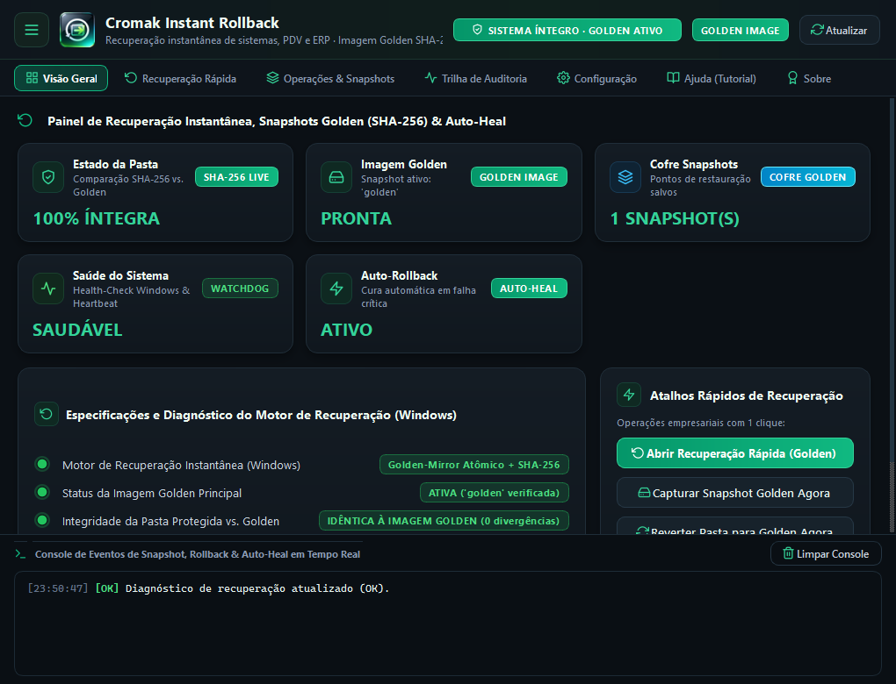
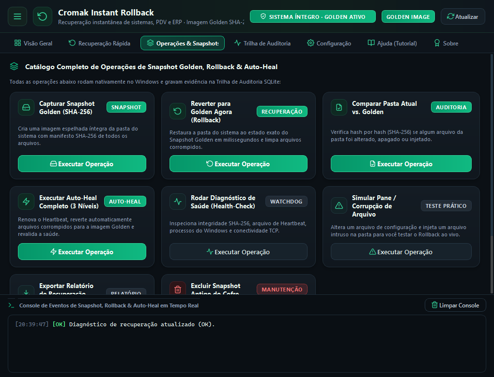
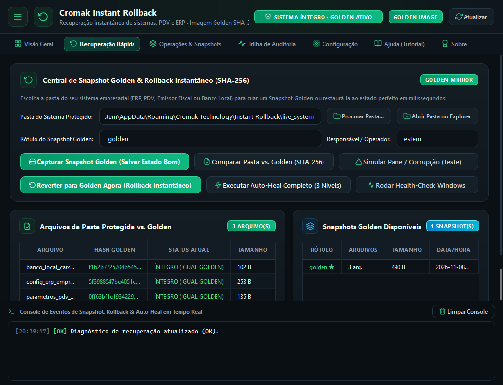
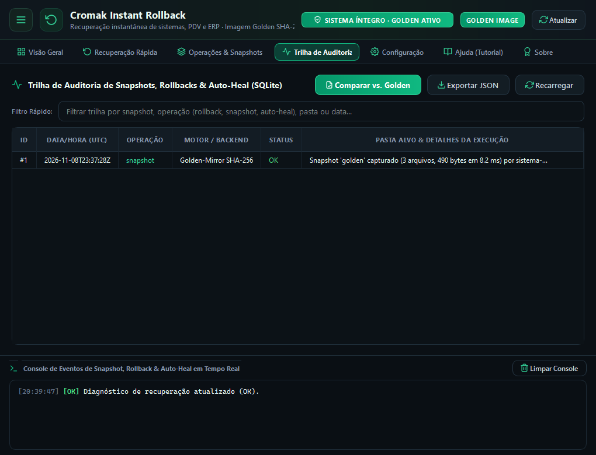
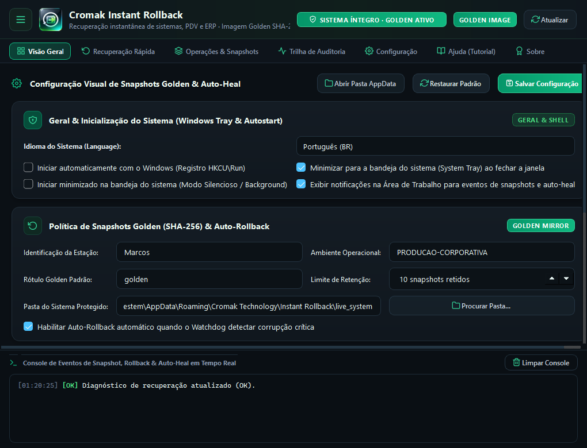
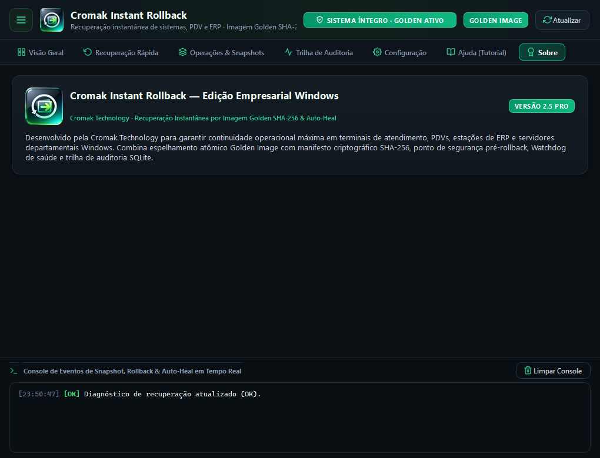

Cromak Instant Rollback
Instant Disaster Recovery for POS, ERP, and Critical Windows Terminals.
Version: 1.0.0 (Build 2026.11)
Elimine o tempo de inatividade em comércios, indústrias e caixas de atendimento. Quando uma queda de energia, falha humana ou malware corrompe o software de PDV ou o banco de dados do ERP, o Cromak Instant Rollback restaura o estado de ouro operacional em poucos segundos, sem necessidade de internet e sem formatar o computador.

A frozen terminal is lost revenue: get back to billing in seconds.
Em supermercados, drogarias, restaurantes e redes de varejo, cada minuto de fila gerada por um caixa travado custa clientes e credibilidade. Backups em nuvem são lentos, demandam internet de alta velocidade e exigem técnicos especializados no local para reinstalações demoradas.
O Cromak Instant Rollback foi desenvolvido sob medida para a resiliência operacional: armazena a Golden Image perfeita dos arquivos e configurações do PDV/ERP localmente com integridade criptográfica SHA-256 e executa o Auto-Heal cirúrgico com um simples clique do operador ou via rotina automática.
The 4 Pillars of Operational Continuity
-
Golden Image Baseline SHA-256
Mapeia a assinatura criptográfica de todos os binários, DLLs, esquemas de banco de dados e arquivos de configuração do sistema homologado, criando o padrão de ouro incorruptível do seu software.
-
Auto-Heal & Restauração Cirúrgica
Identifica pontualmente quais arquivos foram corrompidos, modificados ou excluídos e substitui unicamente os itens danificados em questão de segundos, sem tocar no restante dos dados da máquina.
-
Integração com VSS & Snapshots Atômicos
Cria e gerencia pontos atômicos de restauração através do subsistema Volume Shadow Copy (VSS) do Windows, garantindo cópias consistentes mesmo com bancos de dados SQLite, Firebird ou SQL Server abertos.
-
Modo Emergência 1-Click (100% Offline)
Interface intuitiva de recuperação rápida com acionamento por botão único ou atalho de teclado, permitindo que qualquer operador de caixa reverta falhas sem depender de suporte técnico externo.
Explore the Interface
Clique nas imagens para expandir e conhecer os painéis de recuperação.
Dashboard & Integridade do Sistema
Status em tempo real da saúde da Golden Image, contagem de snapshots atômicos, integridade do VSS e atalhos de recuperação imediata.

Operations Catalog & Auto-Heal
Comandos para capturar novas Golden Images, executar varreduras de discrepância, restaurar arquivos danificados e gerenciar snapshots.

Quick Recovery Hub (1-Click)
Painel simplificado para operadores de caixa acionarem o rollback de emergência em segundos durante paradas críticas de venda.

Forensic Restoration Ledger
Log auditável de todas as intervenções de Auto-Heal com data, hora, motivo técnico, quantidade de arquivos reparados e hash de validação.

Monitored Folders & VSS Policy
Definição das pastas monitoradas do PDV/ERP, intervalo de verificação em segundo plano e limites de retenção de snapshots no disco.

Technical Specifications & PRO License
Informações de HWID, status da licença corporativa e acesso direto à documentação, EULA e políticas de privacidade integradas.
Choose the Ideal License for Your Business
Garantia de faturamento contínuo desde pequenos caixas até redes de franquias.
Free Plan
- Golden Image para 1 Aplicação/PDV
- SHA-256 Baseline Integrity Verification
- Restauração Manual de Arquivos
- Auto-Heal Automático Desativado
- Sem Gestão de Snapshots VSS
- Sem Exportação de Relatórios de Incidentes
Personal PRO
- 1 Machine License (Lifetime)
- Unlimited Monitored Folders & Applications
- Surgical Sub-Second Auto-Heal
- Gestão Completa de Snapshots VSS
- 1-Click Offline Emergency Trigger
- Certified Incident Audit Ledger
Corporativo (B2B)
- Multi-Seat (Up to 5 POS / Workstations)
- Or $ 149.90 (Lifetime for 10 Machines)
- Central Batch Golden Image Deployment
- Centralized Business Continuity Policies
- Priority B2B Commercial Support
- Tailored for Retail Chains, Pharmacies & Stores
Multilingual Installers
O software detecta automaticamente o idioma do seu sistema operacional ou permite a troca instantânea na interface com tradução 100% nativa em 10 idiomas.
System Requirements
Operating System
Windows 10 / 11 / POS / IoT (x64 Nativo)
Processador
Dual-Core (1.0 GHz ou superior)
Memory (RAM)
512 MB Livres (Ideal para terminais de caixa)
Armazenamento
40 MB de espaço livre em disco
Privileges
Administrador (Requerido para integração VSS)
Idiomas Suportados
10 Idiomas Nativos
Português, English, Español, Français, Deutsch, Italiano, Русский, 简体中文, 日本語, 한국어Frequently Asked Questions
How does Instant Rollback recover a frozen system in seconds?
Instead of relying on heavy 50GB backup images that take hours to restore an entire disk, Instant Rollback operates surgically: it computes SHA-256 integrity hashes of vital files in milliseconds and instantly replaces only the corrupted or deleted files directly from the local Golden Image.
Does the software work if the POS terminal is completely offline without internet?
Yes, 100%. Instant Rollback's entire architecture is autonomous and offline by design. The Golden Image baseline and VSS snapshots reside on the local drive or a protected partition, allowing the operator to recover checkout terminals even during severe network link outages.
Does it interfere with my ERP's transactional sales database?
No. The system integrates with Microsoft's native VSS (Volume Shadow Copy) service, which ensures atomic consistency across transactional databases (such as SQLite, Firebird, and SQL Server), preserving newly recorded sales while restoring structural system integrity without data loss.